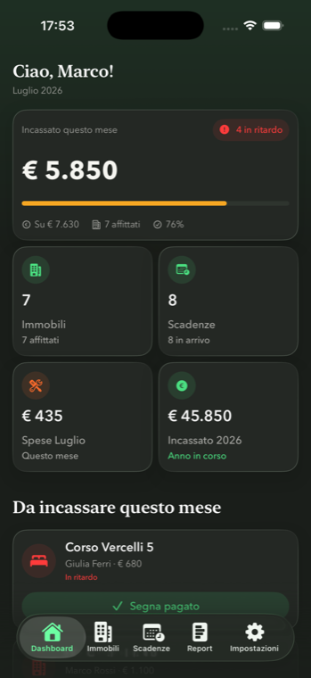
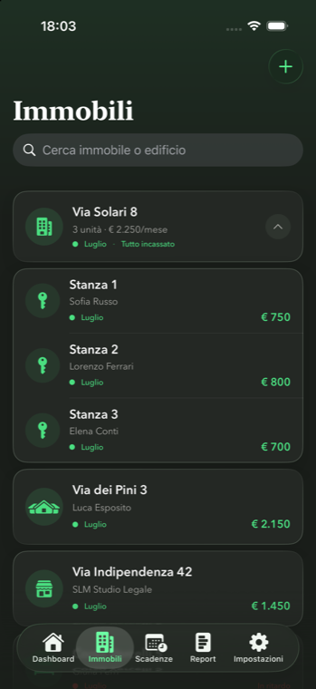
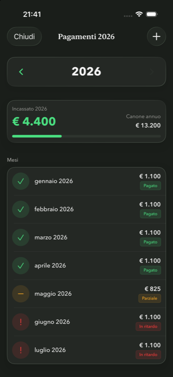
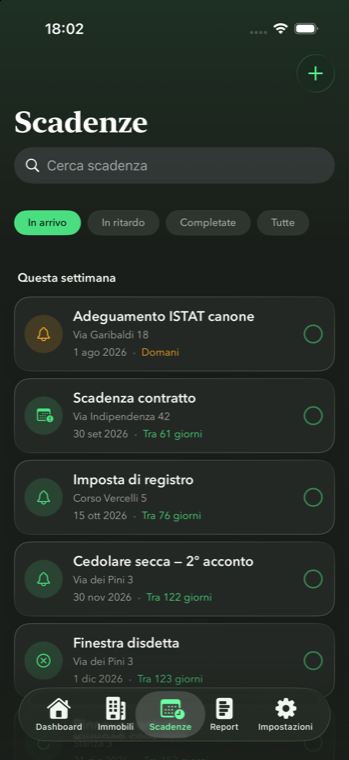
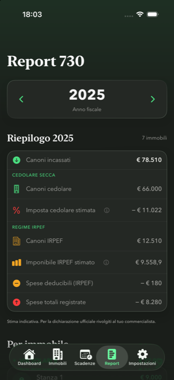

Case study · 2026Case study · 2026
Quillino — designing a rental manager around the one question landlords ask every month Quillino — progettare un gestionale per affitti attorno all'unica domanda che ogni proprietario si fa ogni mese
A native iOS app for Italian private landlords. A solo project — from positioning and information architecture to the design system, shipped on the App Store and actively maintained since. App iOS nativa per piccoli proprietari italiani. Progetto personale — dal posizionamento e l'architettura informativa fino al design system, pubblicata su App Store e aggiornata di continuo dal lancio.
Overview
Italian private landlords with one to five rentals manage everything in fragments — a spreadsheet for rent, the phone calendar for deadlines, a folder for receipts. The apps that exist are built for agencies: too heavy, and blind to the Italian tax rules a private owner actually has to handle (cedolare secca, the 730 declaration, ISTAT adjustments, imposta di registro).
Quillino is the app I wanted to use myself. The target user isn't a professional — it's someone who wants their rentals handled with the least possible effort and no learning curve.
I ran the whole thing solo: positioning, competitive research, information architecture, the design system, every screen, the microcopy, the App Store assets, pricing and the release cadence. Development was done in pair-programming with an AI coding assistant, with me owning every product and design decision.
Contesto
I piccoli proprietari italiani che gestiscono da uno a cinque immobili tengono tutto in modo frammentato — un foglio Excel per gli affitti, il calendario del telefono per le scadenze, una cartella per le ricevute. Le app che esistono sono pensate per le agenzie: troppo pesanti, e cieche rispetto alle regole fiscali italiane con cui un privato deve davvero fare i conti (cedolare secca, dichiarazione 730, adeguamenti ISTAT, imposta di registro).
Quillino è l'app che volevo usare io per primo. L'utente di riferimento non è un professionista: è una persona che vuole gestire i propri affitti con il minimo sforzo e senza curva di apprendimento.
Ho seguito tutto da solo: posizionamento, ricerca sui competitor, architettura informativa, design system, ogni schermata, i microtesti, gli asset per l'App Store, i prezzi e il ritmo dei rilasci. Lo sviluppo è stato fatto in coppia con un assistente AI, con me a decidere ogni scelta di prodotto e di design.
Research: a competitive benchmark, and its limits
I did not run primary research. This is the honest gap in the project: no interviews, no diary studies, no usability sessions with real landlords before launch. What I did was a structured competitive benchmark — the Italian players (AffittoMio / Gestione Affitti, AlloggioPro, Rentila, Rentadia) plus a few US comparables — mapping their information architecture, their onboarding, and how each one handled, or ignored, fiscal reporting.
The benchmark surfaced a consistent gap: none of them were designed for the Italian fiscal context, and none for a non-professional user. That gap became the product's positioning.
The hypothesis I designed around
Every competitor I looked at pointed the same way: the number-one question a landlord has is always "how much have I collected this month?". So I made that the single largest element on the first screen — before properties, before deadlines. The written reviews after launch ("useful and above all easy to understand") suggest the bet was right — but validating it properly with users is the first thing I'd add.
Ricerca: un benchmark competitivo, e i suoi limiti
Non ho condotto ricerca primaria. Questo è il limite onesto del progetto: nessuna intervista, nessun diary study, nessuna sessione di usability con proprietari reali prima del lancio. Quello che ho fatto è un benchmark competitivo strutturato — gli attori italiani (AffittoMio / Gestione Affitti, AlloggioPro, Rentila, Rentadia) più alcuni comparabili statunitensi — mappandone l'architettura informativa, l'onboarding e il modo in cui ciascuno gestiva, o ignorava, la parte fiscale.
Il benchmark ha fatto emergere un gap ricorrente: nessuno era progettato per il contesto fiscale italiano, e nessuno per un utente non professionale. Quel gap è diventato il posizionamento del prodotto.
L'ipotesi attorno a cui ho progettato
Ogni competitor analizzato portava nella stessa direzione: la domanda numero uno di un proprietario è sempre "quanto ho incassato questo mese?". Così l'ho reso l'elemento più grande della prima schermata — prima degli immobili, prima delle scadenze. Le recensioni scritte dopo il lancio ("utile e soprattutto facile da capire") suggeriscono che la scommessa fosse giusta — ma validarla davvero con gli utenti è la prima cosa che aggiungerei.
Information architecture
I organised the product around five areas that match the "mental drawers" a landlord already uses day to day — just digitised and automated.
| Area | Purpose |
|---|---|
| Dashboard | Monthly snapshot: collected, expenses, urgent deadlines |
| Properties | Buildings, units, tenants, contracts, documents |
| Deadlines | One unified calendar with schedulable push notifications |
| Report | Automatic annual tax summary (cedolare / IRPEF) |
| Widget | Monthly collection bar on the iOS Home Screen |
A flat tab bar keeps every function one tap away from anywhere in the app.
Architettura informativa
Ho organizzato il prodotto attorno a cinque aree che corrispondono ai "cassetti mentali" che un proprietario usa già nella gestione quotidiana — solo digitalizzati e automatizzati.
| Area | Scopo |
|---|---|
| Dashboard | Colpo d'occhio mensile: incassato, spese, scadenze urgenti |
| Immobili | Edifici, unità, inquilini, contratti, documenti |
| Scadenze | Un calendario unico con notifiche push programmabili |
| Report | Riepilogo fiscale annuo automatico (cedolare / IRPEF) |
| Widget | Barra di incasso mensile sulla Home Screen iOS |
Una tab bar piatta tiene ogni funzione a un tap di distanza da qualsiasi punto dell'app.
Design system first
I built the design system before any screen — semantic tokens for colour, type and spacing; components with auto-layout; dark mode designed in from the start. Every colour pair was checked against WCAG AA.
Working in AI pair-programming made this non-negotiable: generated code drifts back to hardcoded values between sessions, so a strict token layer was the only way to keep 25+ screens visually coherent across months of iteration.
Il design system per primo
Ho costruito il design system prima di qualsiasi schermata — token semantici per colore, tipografia e spaziatura; componenti con auto-layout; dark mode prevista fin dall'inizio. Ogni coppia di colori è stata verificata rispetto a WCAG AA.
Lavorare in coppia con l'AI lo ha reso irrinunciabile: il codice generato tende a tornare a valori hardcoded tra una sessione e l'altra, quindi un layer di token rigoroso era l'unico modo per tenere oltre 25 schermate visivamente coerenti lungo mesi di iterazione.
Key design decisions
Decisioni di design principali





The dashboard answers the money question first
"Incassato questo mese" is the biggest number on screen, with a progress bar toward the month's total and a red "in ritardo" pill when something is late. Everything else — property count, upcoming deadlines, expenses, year-to-date — sits below as secondary stats.
One colour language for payment status, everywhere
Paid is green, partial is amber, late is red — the same three semantics on the dashboard, the payments list, the property rows and the widget. A landlord learns the code once.
Collect without leaving the screen
"Da incassare questo mese" is a quick-pay list: one tap marks a month paid, a secondary action opens a pre-written WhatsApp message. The text is contextual — a different template for a confirmation, a chase, a renewal, or arrears.
Deadlines the user would otherwise forget
The app works out the Italian tax and contract deadlines and reminds the user in time, each with a schedulable notification. The user never has to hold the calendar in their head.
Report as a stopping point
The 730 summary splits cedolare vs IRPEF, estimates the taxable base, and carries a plain "this is an estimate — talk to your accountant" disclaimer. It sits behind a single card tap so the more frequent actions (receipt, tenant report) come first.
La dashboard risponde prima alla domanda sui soldi
"Incassato questo mese" è il numero più grande in schermata, con una barra di avanzamento verso il totale del mese e una pill rossa "in ritardo" quando qualcosa è scoperto. Tutto il resto — numero di immobili, scadenze in arrivo, spese, incassato dell'anno — sta sotto come statistica secondaria.
Un solo linguaggio di colore per lo stato dei pagamenti, ovunque
Pagato è verde, parziale è ambra, in ritardo è rosso — le stesse tre semantiche sulla dashboard, nella lista pagamenti, sulle righe degli immobili e nel widget. Il proprietario impara il codice una volta sola.
Incassare senza uscire dalla schermata
"Da incassare questo mese" è una lista ad azione rapida: un tap segna un mese come pagato, un'azione secondaria apre un messaggio WhatsApp già scritto. Il testo è contestuale — un template diverso per una conferma, un sollecito, un rinnovo o gli arretrati.
Scadenze che l'utente altrimenti dimenticherebbe
L'app calcola le scadenze fiscali e contrattuali italiane e le ricorda in tempo, ognuna con una notifica programmabile. L'utente non deve tenere a mente il calendario.
Il Report come punto d'arrivo
Il riepilogo per il 730 separa cedolare e IRPEF, stima l'imponibile e porta con sé un disclaimer chiaro: "stima indicativa — per la dichiarazione rivolgiti al commercialista". Vive dietro il tap di una singola card, così le azioni più frequenti (quietanza, report inquilino) vengono prima.
A pattern I threw away
The first paywall was a Free-vs-Pro comparison table. It tested badly against my own judgement: the table made the user do work to find the one plan that mattered, and buried "Restore purchases" below the fold — an App Review risk.
The rebuild is a three-row vertical plan selector with the annual plan preselected, five bullet benefits instead of a matrix, a single CTA that reflects the chosen plan, and Restore moved into the header. Selecting a row fills its background rather than just outlining it, so the choice is unambiguous.
I repriced at the same time. A benchmark of the Italian competitors showed the market converging around €60 a year; Quillino was sitting at €12.99, well under. Annual moved to €59.99 and a monthly option was added for lower commitment.
Un pattern che ho buttato
Il primo paywall era una tabella comparativa Free / Pro. Ha retto male al mio stesso giudizio: la tabella costringeva l'utente a lavorare per trovare l'unico piano che contava, e nascondeva "Ripristina acquisti" sotto la piega — un rischio in fase di App Review.
La nuova versione è un selettore di piani a tre righe verticali con l'annuale preselezionato, cinque benefici puntati invece di una matrice, una singola CTA che riflette il piano scelto, e Ripristina spostato nell'header. Selezionare una riga ne riempie lo sfondo invece di limitarsi al bordo, così la scelta è inequivocabile.
Ne ho approfittato per rivedere i prezzi. Un benchmark dei competitor italiani mostrava il mercato convergere attorno ai 60 € l'anno; Quillino era fermo a 12,99 €, molto sotto. L'annuale è passato a 59,99 € ed è stato aggiunto un piano mensile per chi vuole meno impegno.
Craft and constraints
The technical background did the heavy lifting
Without years on both sides — design and front-end — the app wouldn't have held together. On the technical side I caught that the generated data model wouldn't scale on the Building → Unit → Tenant hierarchy, handled inconsistent widget state, and fixed a SwiftUI binding that wasn't refreshing the payments list.
On the design side I kept component and token consistency by hand against the AI reintroducing hardcoded values, and rejected several generated patterns that were functionally fine but contradicted flows I'd already established.
Cura e vincoli
Il background tecnico ha fatto la differenza
Senza anni da entrambi i lati — design e front-end — l'app non avrebbe retto. Sul lato tecnico ho riconosciuto che il modello dati generato non avrebbe scalato sulla gerarchia Edificio → Immobile → Inquilino, ho gestito stati inconsistenti nel widget e risolto un binding SwiftUI che non aggiornava la lista pagamenti.
Sul lato design ho mantenuto a mano la coerenza di componenti e token contro l'AI che reintroduceva valori hardcoded, e ho scartato diversi pattern generati corretti a livello funzionale ma in contraddizione con flussi già stabiliti.
Impact
Risultati
The first installs came entirely from organic App Store search — a few dozen in the first three months. Small numbers, but real users: two of the four reviewers left written feedback.
"Well made, useful and above all easy to understand."
App Store review · ★★★★★
"Easily the best app in this category. Nothing missing, simple to use, intuitive. Support is SUPER. An app that keeps evolving to fit everyone's needs — I'd recommend it no matter how many apartments or rooms you manage."
App Store review · ★★★★★
Le prime installazioni sono arrivate interamente dalla ricerca organica su App Store — qualche decina nei primi tre mesi. Numeri piccoli, ma utenti reali: due dei quattro recensori hanno lasciato un commento scritto.
"Ben fatta, utile e soprattutto facile da capire."
Recensione App Store · ★★★★★
"Sicuramente la migliore app di questa categoria. Non manca niente, semplice da usare, intuitiva. Assistenza SUPER. App in continua evoluzione per adeguarsi alle esigenze di tutti — la consiglio a prescindere dalla quantità di appartamenti o camere da gestire."
Recensione App Store · ★★★★★
What I'd do differently
- Talk to landlords before designing, not after. A benchmark told me what competitors do; it couldn't tell me where real users struggle. Post-launch email feedback is now the closest thing I have to a research loop.
- Validate pricing earlier. Launching well under market meant a disruptive ~5× correction later — one Apple requires existing subscribers to actively consent to.
- Gate the free tier from day one. The "one property free" rule wasn't enforced everywhere, so a lapsed subscriber could keep editing everything — a fix that ended up touching most of the app.
Cosa farei diversamente
- Parlare con i proprietari prima di progettare, non dopo. Un benchmark mi ha detto cosa fanno i competitor; non poteva dirmi dove gli utenti reali fanno fatica. Il feedback via email dopo il lancio è oggi la cosa più simile a un loop di ricerca che ho.
- Validare i prezzi prima. Lanciare molto sotto mercato ha comportato una correzione dirompente di ~5× più avanti — di quelle per cui Apple richiede il consenso attivo degli abbonati esistenti.
- Applicare i limiti del piano gratuito dal primo giorno. La regola "un immobile gratis" non era applicata ovunque, quindi un abbonamento scaduto poteva continuare a modificare tutto — un fix che alla fine ha toccato quasi tutta l'app.
Quillino is a personal project. Screenshots use sample data. Figures are from App Store Connect as of August 2026. Quillino è un progetto personale. Gli screenshot usano dati di esempio. I numeri provengono da App Store Connect ad agosto 2026.